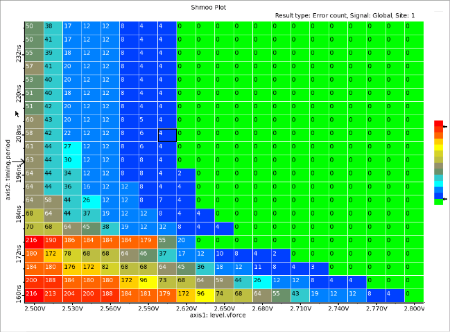
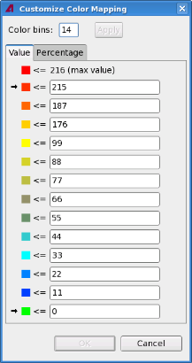
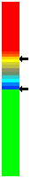

Colors in shmoo plots
After you execute a shmoo test with the Shmoo Tool, the system automatically assigns colors to the cells on shmoo plots. Different cells may have different colors if their associated test results are different.
The maximum number of colors on a shmoo plot is twenty. The green color represents PASS. The red color represents FAIL. The white color represents no data.
Colors for the pass/fail test mode
On shmoo plots, there are only two colors, green and red to indicate pass and fail of the test mode.
Colors for the user defined measurement test mode
This mode usually displays measured values on each cell.
Shmoo plots that display value results (as opposed to just Pass/Fail results) use multiple colors to show cell failure rates. This way you obtain failure rate information at a glance. Each color in the plot corresponds to a color bin. The system automatically calculates the optimum number of color bins and assigns colors and failure values to these based on the results of the current shmoo test.

You can customize color mapping by double-clicking the color bar on the right of the shmoo plot and entering the number of color bins you want to use in the Customize Color Mapping dialog box. Alternatively right-click any part of the plot and select the Customize Color Mapping in the shortcut menu.

You can change the number of color bins by typing over the current value (14 in this example). The available range is 2 - 20. Note, however, that the system may make less than 20 bins available depending on the shmoo results obtained. Error count information can be displayed as a value or as a percentage of cells failing, where 0% failure represents a pass and 100% represents the maximum failure rate determined for a particular shmoo test. You can also enter your own values or percentages into color bins as required by typing over the current values.
 |
You can also change the bin color assignments by grasping the arrows on the color bar and dragging them up or down. The system assigns failure values to the bins automatically. By moving the arrows you are effectively changing the acceptance criteria of the tested product. By dragging the top arrow down you are declaring more partially failed cells as completely failed, thereby increasing the quality of the tested product (more devices are being declared as failed devices). By dragging the bottom arrow up you are declaring more partially failed cells as passed cells, thereby reducing the quality of the tested product (more devices are being declared as passed devices). |
Functional changes
- Introduced in SmarTest 7.2.1
- SmarTest 7.3.3: Customized color mapping introduced